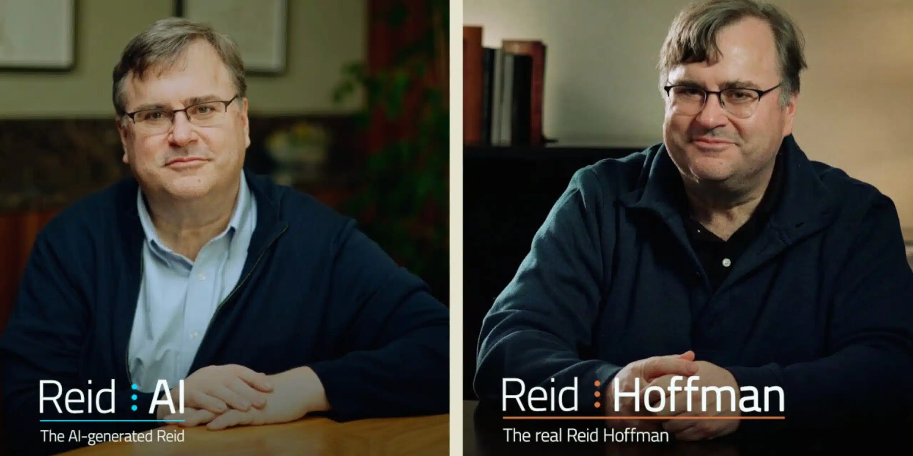
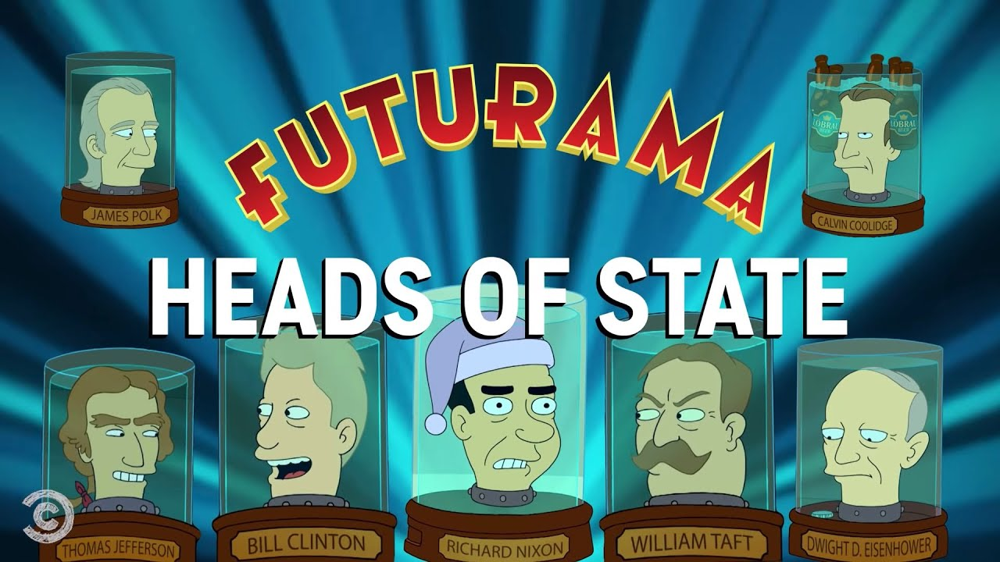

링크드인 CEO의 실험

- 링크드인의 공동 창립자인 리드 호프먼이 AI 쌍둥이와의 인터뷰를 진행했습니다.
-
리드 호프먼은 자신을 똑 닮은 Reid AI를 만들었습니다. Reid AI의 비디오 아바타는 Hour One, 사운드는 Eleven Labs를 이용해 제작됐습니다. AI의 페르소나는 리드 호프먼의 책, 연설, 팟캐스트 등을 학습한 GPT-4 기반의 챗봇을 이용해 만들었습니다.
- 리드 호프먼은 AI의 열렬한 지지자 중 한 명으로 알려져 있습니다.
-
2023년 3월, AI가 초래할 위험성을 지적하며 관련 개발을 6개월 간 중지하라는 공개서한에도 반대 의사를 표한 바 있습니다. 하지만 그런 그 조차도, 이번 실험은 약간 부정적이었지만, 인터뷰를 진행한 이후 매우 흥미로웠다고 밝히고 있습니다.
- AI 쌍둥이의 생각은 나와 얼마나 닮았을까요?
-
리드 호프먼은 챗봇의 대답이 자신의 생각과 얼마나 일치하는지 테스트하기 위해 인터뷰를 진행했습니다. 리드는 본인 트위터에 “인공지능이 생성한 나 자신과 대화를 하면서 자기 성찰 뿐 아니라, 사고 패턴에 대한 새로운 통찰을 찾고, 그 속에 숨겨진 진실을 찾고 싶다”고 밝혔습니다.
인간이 AI 쌍둥이에게 묻다
- 리드 호프먼의 첫 번째 질문은 본인의 저서 <블리츠스케일링> 요약하기였습니다.
-
리드 호프먼은 Reid AI에게 336페이지에 달하는 <블리츠스케일링>을 각기 다른 4명(세상에서 가장 똑똑한 사람, 5살 꼬마 아이, 스타트렉에 등장하는 외계인 종족 클링온, 시트콤 <사인펠드>의 주인공 제리)에 맞추어 대답해 보라고 질문했습니다. 참고로 클링온 종족은 클링온어라는 언어를 사용하는데, 스타트렉 제작진은 실제 언어학자에게 의뢰하여 사용이 가능한 클링온어를 창조한 바 있습니다.
- AI 쌍둥이는 각 독자에 맞춤 대답을 척척 해냈습니다.
-
가장 똑똑한 사람에게는 “블리츠 스케일링(Biltzscaling)은 확장성과 운영 안정성에 수반되는 위험에도 불구하고, 승자독식 시장에서 경쟁사를 앞지르기 위해 자본과 네트워크 효과를 활용하여 효율성보다 빠른 확장을 우선시함으로써 시장 지배력을 확보하기 위한 조직 성장의 전략적 가속화를 의미합니다.”라는 대답을 했고, 5살 꼬마 아이에게는 “타워를 짓는 놀이에서 조금은 지저분하더라도 다른 사람보다 먼저 가장 큰 타워를 초고속으로 건설하는 것”이라고 대답했습니다.
- 리드 호프먼의 사소한 질문에도 Reid AI는 대답을 이어갔습니다.
-
리드 호프먼은 AI 쌍둥이에게 “우리 둘 중에 누가 비디오 호스트에 어울릴까?”라고 질문했고, AI는 “광범위한 데이터, 빈번한 업데이트 또는 다중 언어가 포함된 콘텐츠를 호스팅 하는 데”에는 본인이 더 탁월하다고 강조했습니다. 뿐만 아니라 리드는 자신의 링크드인 페이지를 개선해 달라는 질문을 던지기도 했습니다. 막힘없이 이어가는 AI 쌍둥이의 대답을 듣고, 고민하고, 대답하는 리드 호프먼의 모습이 사뭇 진지합니다.
- 다음으로, 정부가 AI 규제에 어떤 역할을 해야 하는지 AI에게 질문했습니다.
-
Reid AI는 “AI 규제를 논의할 때 정부는 혁신을 촉진하는 것과 윤리를 유지하는 것 사이에서 균형을 유지해야 하며, 글로벌 분야 간 협업을 장려하고 기술의 빠른 진화에 맞춰 정책 결정에 유연성을 유지”해야 한다고 대답합니다. 뒤이어 “혁신을 촉진할 뿐만 아니라 AI 혜택이 공정하게 분배되도록 보장하는 동시에 공익 증진에 초점을 맞추는 프레임워크가 필요”하다고 조언합니다.
디지털 쌍둥이가 불러올 미래?
- 이번엔 AI가 “AI 쌍둥이가 불러올 윤리적 문제”를 인간에게 질문합니다.
-
딥페이크 AI가 스스로 윤리적 문제를 제안한다는 점은 인상적입니다. 리드 호프먼은 매우 중요한 질문이라며 대답을 이어갑니다. 그는 개인과 공인 모두의 신원, 개인 정보 보호 및 평판을 보호하기 위해선 명확한 “도로 규칙(rules of road)”을 확립하는 것이 중요하다고 강조했습니다.
- 만약 내가 죽었다면, 복제된 AI는 어떻게 되는 걸까?
-
죽음을 맞이한 누군가를 추억하는 방법은 남겨진 사진과 영상을 통해서였지만, 디지털 트윈이 등장한 이후엔 바뀔지 모릅니다. 앞으로 우리는 누군가의 정체성을 완전히 재현하고, 새로운 입력에 실시간으로 반응하는 AI를 가질 수 있습니다. 돌아가신 할아버지와 대화하는 시대가 올 수도 있는 거죠. 이때의 AI윤리는 어떤 모습이어야 할까요?

- 수백 년 뒤엔, 불멸의 디지털 쌍둥이에게 질문하는 시기가 올 지 모릅니다.
-
미국의 애니메이션 <퓨처라마>엔 ’통 속의 머리’가 등장합니다. 과거에 이미 사망한 사람들의 머리를 특수 복제해 유리병에 보관하는 거죠. 리처드 닉슨의 머리는 ’지구 대통령’에 취임하기도 하고, 이미 죽은 스티브 잡스에게 디자인 조언을 구할 수도 있습니다. 디지털 쌍둥이도 그렇게 될 수 있을까요.